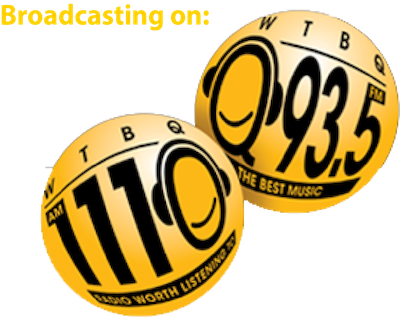

Farm Talk
Farm Talk is a long-running live weekly program in collaboration with the WTBQ radio station which serves the lower Hudson Valley, including northern parts of NYC and streams online. The program features live conversations with educators, researchers, farmers, chefs, and eaters covering topics that span the food system, including precision pest management, carbon farming, no-tillage, and cover cropping. Farm Talk runs every Wednesday from 12:05 to 1 p.m. ET out of Warwick in the Black Dirt region. If you want to be a part of the conversation, live on the radio, you can call 845-651-1110 or text 845-328-0886.

Radio Worth Listening ToNext live broadcast
Loading episodes…